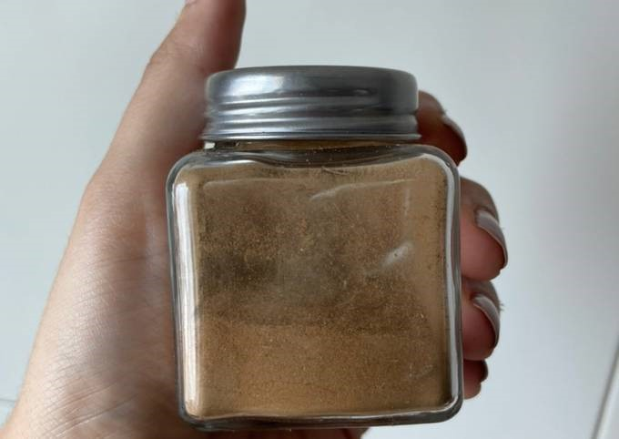

RECETA DE PUMPKIN SPICE
timer
5 minutos
Ingredientes
⅛ taza de canela molida
1 cdita de jengibre en polvo
2 cditas de nuez moscada en polvo
2 cditas de clavo en polvo
Procedimiento
Mezcla todas las especias y revuelvelas bien. Guarda en un frasco bien cerrado hasta su uso.
